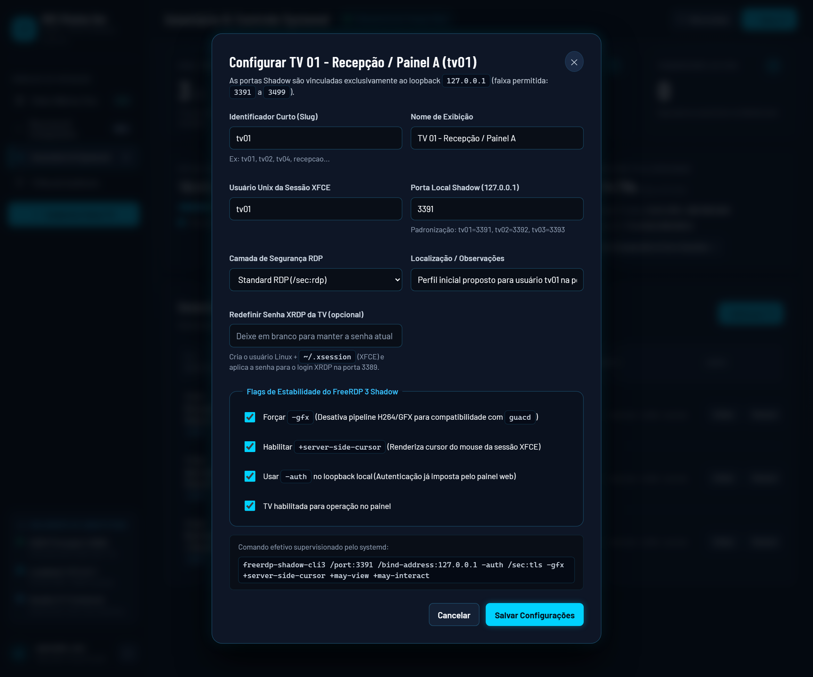
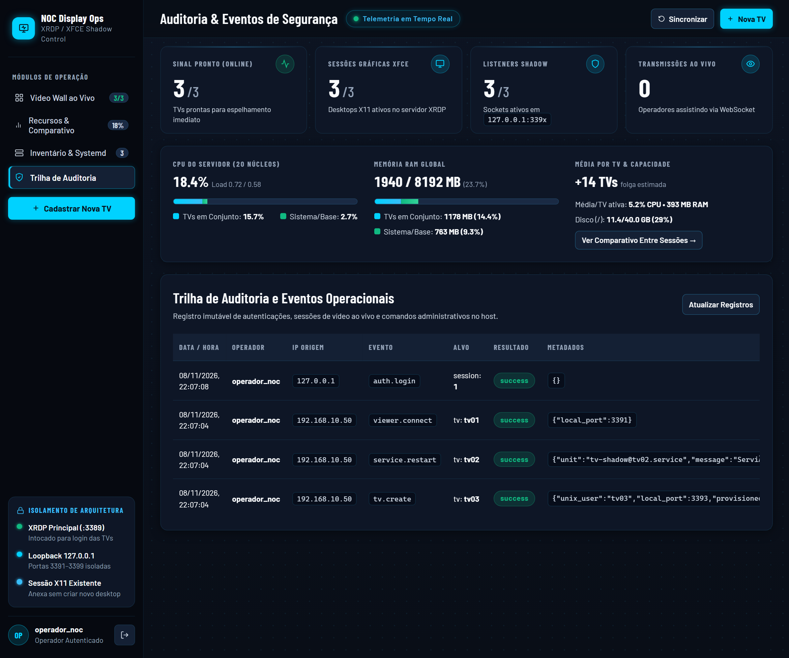

Console de Redes & Datacenter NOC • Auditoria Visual
NOC Display Operations — Antes × Depois
Evolução de um layout genérico (fundo azul neon e fontes monospace indiscriminadas) para um console autêntico de Engenharia de Redes e Telecomunicações (chassi de servidor 1U/2U, fibra óptica, portas switch RJ45/SFP com LEDs Link/Act e varredura de telemetria), preservando 100% da integridade de dados e arquitetura.
1. Video Wall & Monitores de Rede (Painel Principal)


2. Monitoramento de Recursos & Throughput Comparativo


3. Inventário de Terminais & Controle Systemd


4. Console de Autenticação / Portão de Acesso


5. Modal de Provisionamento & Credenciais Linux/XRDP

6. Trilha de Auditoria & Eventos de Segurança

Status por Forma de Ícone & LEDs de Porta de Switch (WCAG 1.4.1)
Em conformidade com a diretriz WCAG 1.4.1 (Uso de Cor), o status de enlace nunca depende exclusivamente da cor: a geometria do ícone e os LEDs físicos de switch comunicam o estado a operadores com daltonismo.
Link Carrier UP
Sinal XFCE + Shadow ativo
Sinal XFCE + Shadow ativo
Atenção / Degradado
Shadow offline / X11 ativo
Shadow offline / X11 ativo
Link Down / Sem Sessão
Terminal desconectado
Terminal desconectado
Alarme / Não Verificado
Falha de inspeção
Falha de inspeção
LEDs de Porta Switch (RJ45 / SFP):
127.0.0.1:3391 [LINK CARRIER + TX/RX ACTIVITY]
Auditoria Técnica Automatizada (Resoluções 1280×720, 1920×1080, 2560×1440)
| Critério | Antes | Depois (Console de Redes NOC) |
|---|---|---|
| Tamanho Mínimo de Fonte (TV) | 67 de 81 declarações abaixo de 14px (mínimo de 0.58rem ≈ 9px). Ilegível a 3 metros. | 0 violações. Mínimo medido no navegador: 15.47px (1080p), escalando via clamp(16px, 0.4vw + 10px, 21px) até 17.7px em telas 4K. |
| Contraste WCAG AA (≥ 4.5:1) | Rótulos cinza-azulado apagados sobre fundos escuros; contrastes de 2.1:1 a 3.4:1. | 0 falhas. Rótulos secundários ≥ 5.2:1, destaques de enlace ≥ 11:1, botão de alarme ≥ 7.8:1. |
| Status Acessível (WCAG 1.4.1) | Apenas pontos idênticos de 7px; status imperceptível para operadores daltônicos. | Ícone geométrico próprio (círculo, triângulo, losango) + LEDs de switch Link/Act + aria-label. |
| Alvos de Toque / Ergonomia | Botões de 26–28px de altura, propensos a erro de clique em telas touch/TV. | Altura mínima estrita: 36px (xs), 40px (sm) e 44px (padrão NOC). |
| Efeitos Visuais de Redes | Nenhum efeito ou neons estáticos desconexos. | LEDs assíncronos de transmissão de pacotes (TX/RX), varredura suave de radar de telemetria nos monitores, malha de patch panel e chassi modular blade. |
| Hierarquia Tipográfica | Monospace genérico em toda a interface; métricas e rótulos sem contraste de peso. | Barlow Condensed 700 para números e métricas, Barlow para rótulos curtos em caixa-alta, Monospace restrito a portas e comandos. |
| Isolamento de Fontes (CSP) | Fontes externas via Google Fonts bloqueadas pelo cabeçalho CSP local. | Fontes 100% empacotadas no build via pacotes locais @fontsource (zero requisições externas). |